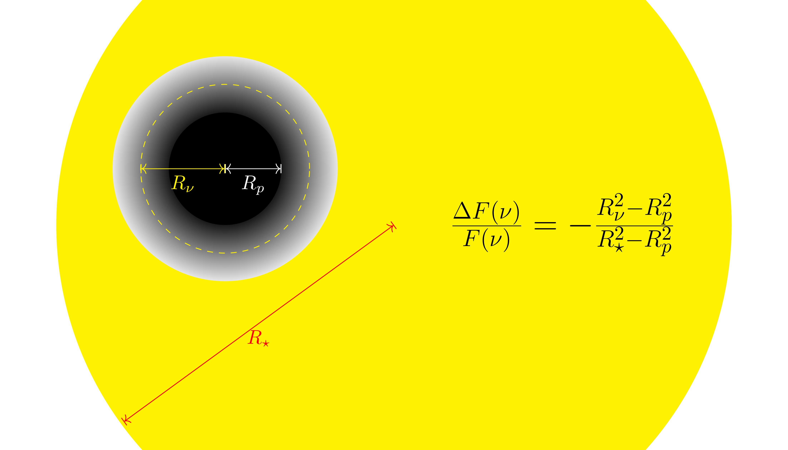
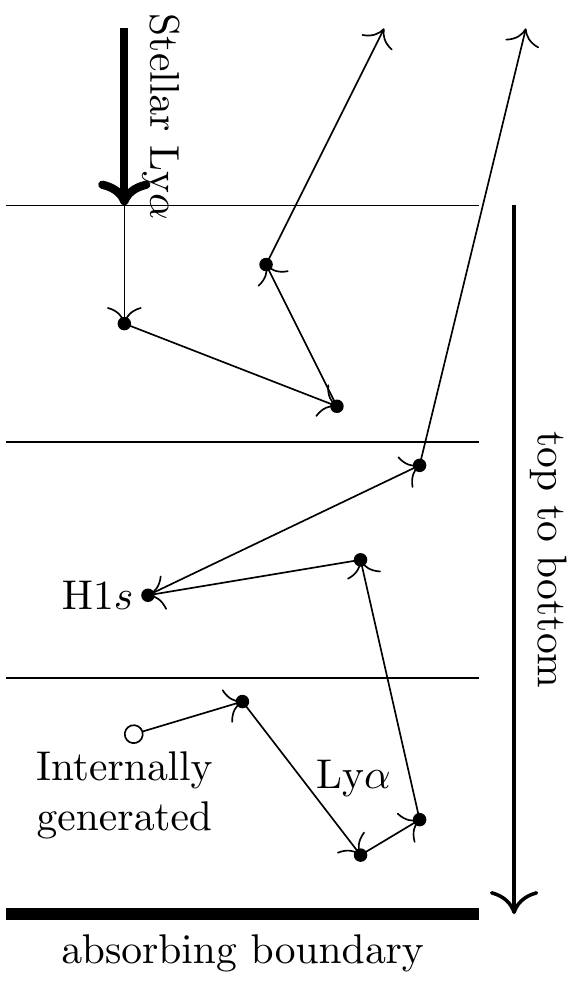
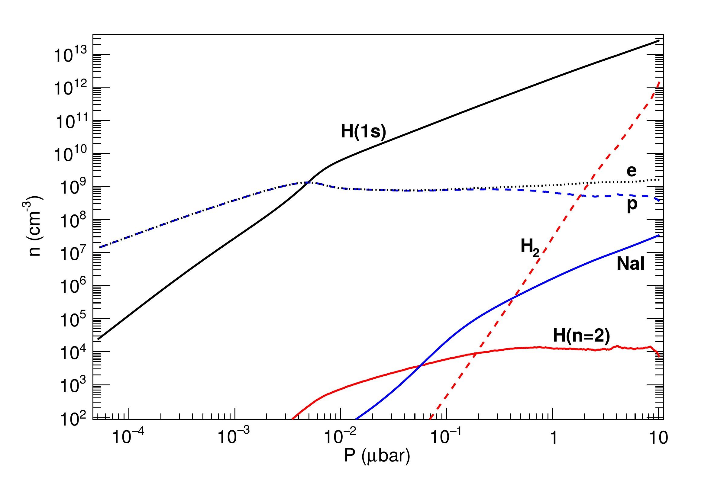
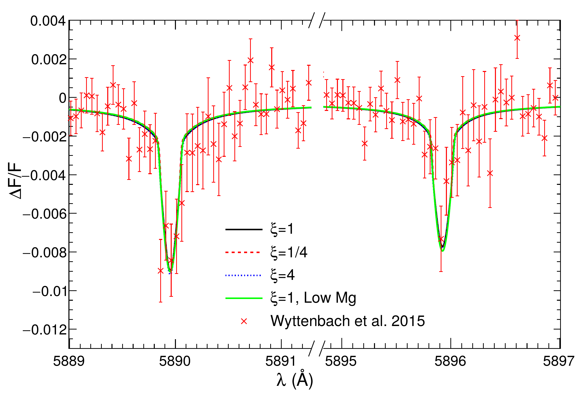
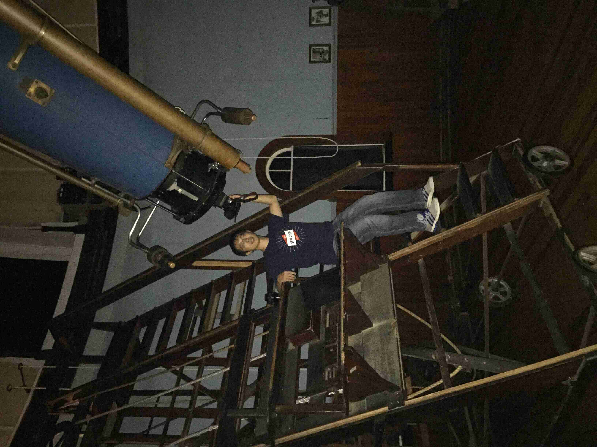
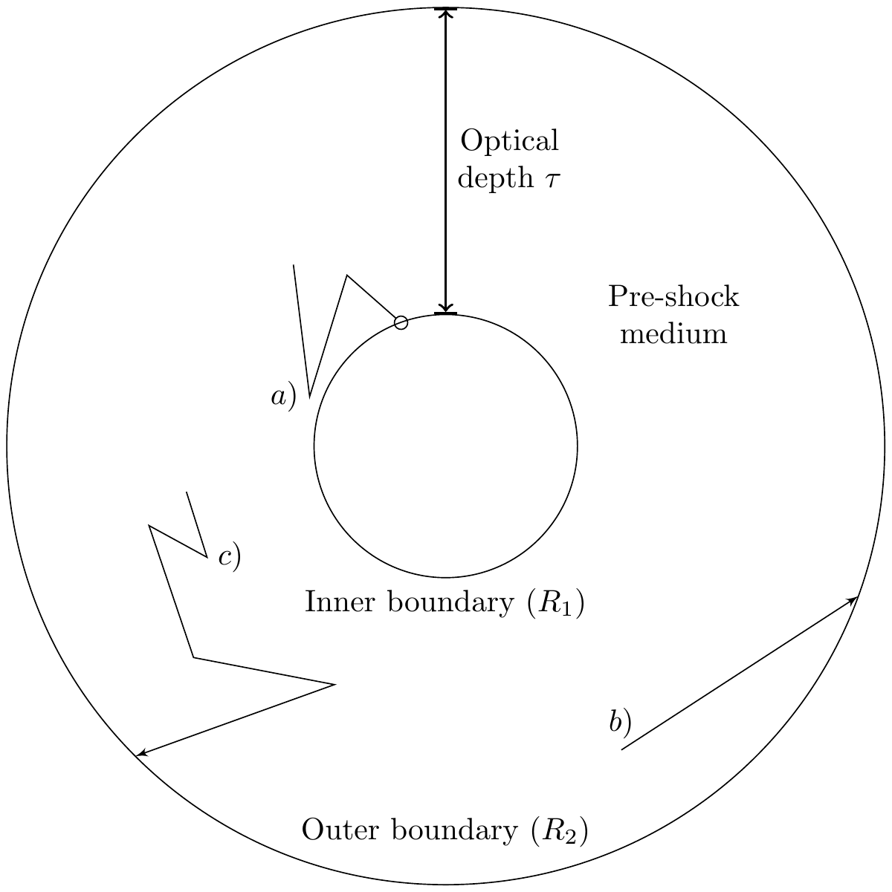
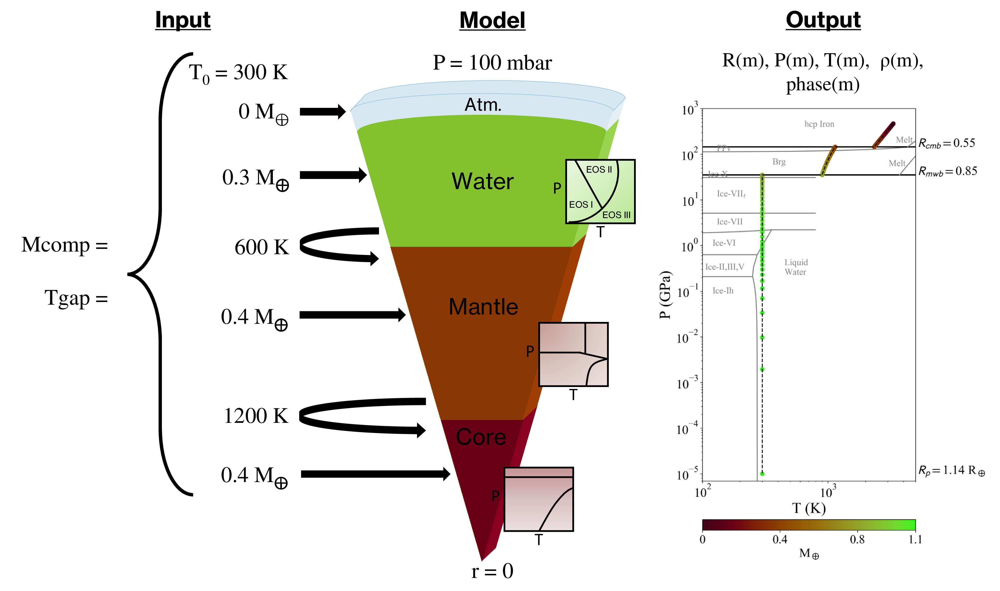

A succesful view of the total solar eclipse with Sun, Meng on Aug 21, 2017, on a lawn next to the Watts Bar lake, Knoxville, TN. The background of the banner of the webpage is the photo of total eclipse we took with this telescope, which was borrowed from UVa astronomy department.
Brief biography
I am an associate professor at the Shanghai Astronomical Observatory, Chinese Academy of Sciences, a position I have held since January 2023. As a member of the Planetary Physics and Magnetohydrodynamic Research Group, I specialize in theoretical astrophysics and apply physical laws to gain insights into various astronomical phenomena.
My primary research focus is on the physics and chemistry of the middle and upper atmospheres of gas giant exoplanets, as well as their escape mechanism, through both observational analysis and theoretical modeling. Additionally, I have developed the interior structure model, MAGRATHEA, to provide valuable constraints on the compositions of terrestrial exoplanets. Furthermore, I have written a radiative transfer model to explore the physics of interacting supernova remnants.
Prior to joining SHAO, I completed two postdoctoral programs. From September 2017 to August 2019, I collaborated with Prof. Jason Steffen at UNLV. Subsequently, from August 2019 to October 2022, I worked alongside Prof. Tommi Koskinen at the Lunar and Planetary Laboratory, University of Arizona.
In 2017, I received my Ph.D. in Astronomy from UVa, under the mentorship of Prof. Phil Arras and Prof. Roger Chevalier. My doctoral research extensively focused on theoretical studies of exoplanet atmospheres and supernova remnants. Earlier, in 2011, I obtained my B.S. in Physics from Peking University.
Collaborate with Tommi Koskinen, we expand the
Adding atomic metal species and related physical processes into the photochemical-dynamical thermosphere in Koskinen et al., 2013, Koskinen and I try to interpret the observed transmission spectrum of metal species in NUV.
Under the supervision of Phil Arras at UVa, we constructed a hot Jupiter thermosphere model to explain the observed Hα and Na D transmission spectrum of HD 189733b and constrain the properties of hot Jupiter upper atmosphere (Huang et al., 2017). We demonstrate that radiative excitation by Lyα is the dominant mechanism for H atom excitation, and constructed a Monte Carlo simulation for the resonant scattering process of Lyα photon in the upper atmosphere.
Under the supervision of Roger Chevalier at UVa, we constructed a model of radiation transfer due to electron scattering within pre-shocked ionized circumstellar medium (CSM) to explain the observed broad component of interacting supernovae emission lines (Huang & Chevalier, 2018).
Under the direction of Jason Steffen at UNLV and collaborate with David Rice, we develope an open-source C++ terrestrial planet interior structure code MAGRATHEA. The code is structured to enable the user to choose between a large library of EOSs and add/change materials and equations (Huang et al., 2022, submitted). Using MAGRATHEA, we demonstrate the effect of the new measurement of equation of state (EOS) of water ice on our understanding of terrestrial planets (Huang et al., 2021).
A Model of the Hα and Na Transmission Spectrum of HD 189733b

Figure 1. Illustration of the transmission spectrum
Measuring the transit depth of planets as a function of wavelength, also known as the transmission spectrum, can be used to probe their atmospheres. The stellar beams pointed at the Earth probe the transiting planet's atmosphere transversely along a chord perpendicular to the impact radius. Besides the opaque planet with radius , the atmosphere blocks an extra amount of the light. The scale of the brightness reduction at frequency ν due to planet and its atmosphere is equivalent to a bare planet with an equivalent radius of . Because the opacity of molecules and atoms in a planet's atmosphere is a function of wavelength, they will leave their trace in the transmission spectrum. Transmission spectrum is the best tool to characterize the atmosphere near the planet's terminator.

Figure 2. Illustration of the Monte-Carlo simulation for Lyα
Cauley et al. (2015,2016) observed Hα and Na D transmission spectrum of hot Jupiter HD 189733b using ground based telescopes. The feature is a sensitive probe of planetary upper atmosphere because the excitation and de-excitation processes for H(n=2), the absorber of Hα, are strongly dependent on the local particle densities, temperature, and radiation field. In addition, the line center transit depth of Hα and Na D are close, which indicates the absorption of these lines are mostly contributed by the same region. Therefore, an atmosphere model of this region that can explain both absorption features can largely improve the knowledge about the upper atmospheres of exoplanets.
Following Christie et al. 2013, we constructed a spherically symmetric hydrostatic atmosphere model encompassing the region dominated by atomic hydrogen. The atomic hydrogen level population was computed including both collisional and radiative transition rates. The radiative rates between 1s and 2p determines throughout the simulation domain because of the large Lyα intensity . Lyα may also play a role in the heating/cooling and ionization/recombination balance, so a detailed Lyα radiation transfer calculation is crucial.
We solved the Lyα resonant scattering numerically with the Monte-Carlo method, illustrated in Figure 2. The run of particle densities and temperatures versus radius from the hydrostatic atmosphere calculation were used to specify the Lyα source function, as well as the mean free path to scattering and true absorption. Both the incident stellar Lyα and internal sources due to recombination cascade and collisional excitation were included. The hydrostatic atmosphere and Lyα radiation transfer simulation were done iteratively until the result converges.

Figure 3. Number density of major species against the atmosphere pressure.
The combination of and increasing with depth gives rise to an approximately flat H(n=2) around 104 cm-3 over two decades in pressure near the base of the thermosphere, where the temperature is in the range 3000 ~ 6000 K. Metal species, esp. Mg, Na, and Si, are important in heating and cooling of this region. The number densities of Na I and H(n=2) are similar in the pressure region near 10-2 μbar, where the optical depths of Na D and Hα reach 1. This leads to similar transit depths for observed Hα and Na D lines.
Using the temperature and number density of H(n=2) and Na I at each radius, the transmission spectra of Hα (Figure 4) and Na D (Figure 5) we obtained are in broad agreement with the observations of HD 189733b.
Figure 4. Models of Hα transmission spectrum compared to observations.

Figure 5. Models of Na D transmission spectrum compared to observations.
The black solid line shows the fiducial model. To study the impact of stellar activity, blue dotted line and red dashed line show the models whose incoming stellar Lyman continuum flux has been multiplied by a factor of ξ=4 and ξ=1/4 respectively. Larger stellar XUV flux can lead to a deeper transit depth, because the larger XUV flux increases the Lyα intensity inside the atmosphere, and then increases the H(n=2) number density. This may explain the different transit depths between two observations. Unlike Hα, the transit depth of Na D is not sensitive to the Lyman continuum radiation. It is because that the temperature of the layer that Na D probes is determined by metal species with lower excitation energy, which is insensitive to the Lyman continuum radiation.
The green solid line shows the model assuming the abundance of Mg, which is the dominant coolant, is 10-4 of the solar abundance. Since metal lines are the dominant coolant in this part of the atmosphere, the atmosphere structure is sensitive to the density of species such as Mg and Na which may themselves be constrained by observations.

The host star of the planet, HD 189733, is a 8 magnitude star in the constellation of Vulpecula, located near the center of the summer triangle. It can be found with binoculars 0.3 degrees east of the Dumbbell Nebula. The brightness and location of the star make it a ideal target for amateur telescope. Photo: I was observing the HD 189733 using the 26-inch refractor telescope located at the McCormick observatory. It is an interesting experience to have the chance to directly see the system that I am studying.
Electron Scattering Wings on Lines in Interacting Supernovae

Figure 6. Illustration of the scattering region.
Interacting supernovae show evidence of strong shock interaction between their ejecta and pre-existing circumstellar material (CSM), which may be ejected from the unstable progenitor star before the explosion.
After the supernova shock wave has broken out of the progenitor star, the ionizing radiation from the shock region is able to ionize the surroundings. The CSM can have a substantial optical depth to electron scattering and the continuum photosphere is in the unshocked CSM due to the electron scattering opacity. The iconic feature in their spectra is the broad wings (1000s of km/s) associated with the narrow emission lines. To explain the line formation of this feature, we adopt the idea that the narrow emissions are created in the preshock ionized CSM by recombination cascades, and the line profiles are broadened by the electron scattering for the photons that make their way out. This unified model explains the narrow and broad component together.
Shown in Figure 6, the Monte-Carlo simulations were carried out in spherical symmetry, with the scattering medium between the absorbing inner boundary (R1), which can represent a shocked shell, and a large escaping outer radius (R2), which stands for the outer boundary of ionized dense CSM. A photon generated in the wind gas can a) be absorbed by the inner boundary, b) escape the medium from the outer boundary without any scattering, contributing to the narrow component of the spectrum, or c) escape from the outer boundary after scattering a certain number of times, contributing to the broad component.
Figure 7. Comparison of the electron scattering model with the SN 2011ht Hα emission line.
We investigated the dependence of the line profiles on various parameters, including the optical depth, the density distribution, and the velocity profile of the CSM. The line shape is approximately exponential. The radial velocity of CSM can lead to an asymmetry toward the red. We compare the electron scattering model to a number of supernovae, including Type IIn and Type Ia-CSM events.
The black body continuum subtracted SN 2011ht Hα spectrum (black line in Figure 7) shows a narrow component and a broad component with an enhanced red wing (note the exponential y-scale). It can be explained with a model (red line) of expanding CSM with electron scattering optical depth of τ=3.5, temperature of 12,000 K and expanding velocity 600 km/s. A broad He emission feature creates the bump on the red wing around 5000 km/s.
Terrestrial Planets Interior Structure Solver MAGRATHEA and Its Applications
Terrestrial planets may be essential to life because of their solid or liquid surfaces. Interior structure models estimate the radius of terrestrial planets with given masses and compositions. Such models are important in several ways. For example, for planets whose mass and radius are well determined through observation, their interior structure and composition can be roughly constrained by comparing observed values with planet model. Planet interior structure also determines the tidal energy dissipation rate of planets, which is required to study the dynamical and tidal evolution of close-packed planetary systems, such as TRAPPIST-1. Additionally, the late stage of planet formation involves extensive collisions between Mars-sized embryos, which is typically modeled through N-body simulations. The collision timescale, is dependent on the embryo radii.

Figure 8. A schematic overview of MAGRATHEA showing the input (left), four layer structure (center), and the pressure and temperature with enclosed mass (right).
We develope an open-source C++ terrestrial planet interior structure code MAGRATHEA that can meet most requirements. Following the treatment in Zeng et al. 2016, we assume a fully differentiated planetary interior. Having the potential to add new compositions with relative ease, the current model is composed of four concentric spherical layers: iron, rock, ice, and ideal gas. We numerically solve the ordinary differential equations with two-point boundary value problem using the method of shooting to a fitting point. A schematic overview of MAGRATHEA is shown in Figure 8. In the left of the figure, it shows an example input of a 1.1 Earth mass planet. The center panel shows MAGRATHEA's four input layers with sketches of phase diagrams defined for each layer and EOS chosen for each phase. The right panel shows the pressure and temperature with enclosed mass. The radius at boundaries and the planet radii is also shown.
Solving the structure requires knowledge of the phase diagram and equation of state (EOS) ρ(P,T) for each material under high pressure. Compared to other codes, MAGRATHEA features phase diagram options and transparent EOS formatting, which enables the user to choose between a large library of EOSs and add/change materials and equations. We are motivated by our collaboration with high-pressure physicists at UNLV, who significantly improved the measurement accuracy of the phase diagram and EOS of water ice. Using MAGRATHEA, we study how uncertainties in experimental EOSs affect predictions of planet interiors.
Figure 9. Mass-radius curve of planet models compared to observational data.
Figure 9 shows planet mass-radius relation plot for two-layer models. The model uses the new water ice EOS are shown by the solid mass-radius curves. To propagate the uncertainty from EOS fitting to the planet radius, we repeat the calculation of each planet mass-radius curve 1000 times with randomly chosen posteriors of EOS fitting parameters generated by MCMC. The narrow bands enclosed by the dash-dotted lines surrounding the solid lines indicate the 1σ error bar only considered the statistical uncertainty of EOS fitting. Dotted curves show the result from Zeng et al. 2016, which considered the effects of planet interior temperature variations. The dashed curves show a more direct comparison to our results by removing the temperature dependence. Planets whose radii and masses are measured to better than ~10% and ~20% respectively are plotted and color-coded by their surface temperatures. The planet information are taken from NASA Exoplanet Archive, TEPCat and thereafter. The inset plot shows the percent difference in isothermal planet radius due to EOSs (solid line with dashed line). The increased planet radius suggested by the new EOS is larger than the radius uncertainty of many planets. Thus, the contribution of the atmosphere or of water content to the planet structure for planets such as π Mensae c, Kepler 10c, and EPIC 246471491b may be less than previously inferred.